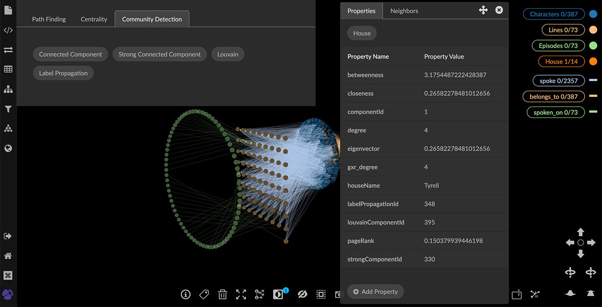

Using Graph Analytic Algorithms The Algorithm panel provides a selection of graph algorithms widely used in graph analytics, organized in Path Finding, Centrality and Community Detection tabs. The Path Finding algorithm traces the path between a set of selected start and end nodes and applies an optional weight. Centrality and Community Detection algorithms evaluate each node in the graph and return a numerical measure of its connectedness or grouping. For an e-book introduction to graph algorithms and their uses, see Graph Algorithms: Practical Examples in Apache Spark and Neo4j. Using Path Finding The Path Finding algorithm traces the shortest path between selected start and end nodes. If relationships in the path have a property that can be used as a weighting factor, you can select a path weighting factor. The nodes and edges on the path are traced and selected. Once a path has been successfully traced, you can click Spotlight Path to display only the nodes and edges involved. To find a path between connected nodes: Open the Algorithm panel and Path Finding tab. Select one or more starting nodes in the graph, and click Add to Start. Your selected nodes are listed in Start Nodes. Note: An error message displays if you select too many start and end nodes such that there are more than ten pairs for tracing the shortest path. Now select ending nodes in the graph, and click Add to End. The selected nodes are listed in End Nodes. Note: You can click Remove Start Node or Remove End Node to delete your current selection and choose other nodes. In the Weight Property menu you can select a property of one of the relationships in the path to be used as a path weighting value, or leave the default Ignore Weight Property selected. If the relationships have no properties (which is often the case), Ignore Weight Property will be the only choice. Click Trace Path to display and select the nodes and edges for the shortest path(s) between your start and end nodes. Click Spotlight Path to display only the nodes and edges in the path. The button label changes to Un-spotlight Path. At this point, you can tag the path, and save the tag as a property so that you can easily find it again. You may also want to save and share a data View, export a GXRF file, or save and export a Snapshot. Once you are done inspecting the path, click Un-spotlight Path to return the all the data to the graph. Note that the path will no longer be selected. However, the start and end nodes persist in the Path Finding tab until you remove them, so you can click Trace Path again. To find a path between a single start and end node, select the two nodes, then select Find Path from the right-click menu. Then, to isolate (i.e. spotlight) the path, select Inverse, then Hide Selection. You can now tag the path and/or save the view as needed. For a path with a single start and end node this might be faster than opening the Path Finding algorithm panel. Using Centrality or Community Detection GraphXR includes a selection of commonly used Centrality or Community Detection algorithms, which are designed to calculate measures of connectedness (both with respect to distance and strength of connection) in multi-dimensional data. There are many such algorithms, and each has its own characteristic behavior and strengths. When you run a Centrality or Community Detection algorithm the computed result is added as a property to each node in the graph. The following table lists the available algorithms and the property names GraphXR uses to store the results. Algorithm Type Algorithm Property Name Centrality PageRank pageRank Centrality Betweenness betweenness Centrality Closeness closeness Centrality Eigenvector eigenvector Community Detection Connected Component componentId Community Detection Strong Connected Component strongComponentId Community Detection Louvain louvainComponentId Community Detection Label Propagation labelPropagationId The numerical results can be displayed (for example, in a scatter plot), accessed for other processes within GraphXR, or exported for use in other graph analytics or statistics applications. To run a Centrality or Community Detection algorithm: In the Algorithm panel, click to open the Centrality or Community Detection tab. Click the button for the algorithm you want to run. A message displays when the calculation is finished. The property and calculated value is added to each node in the graph. To see the results, you can: Open a table. OR Inspect any node’s information panel. 